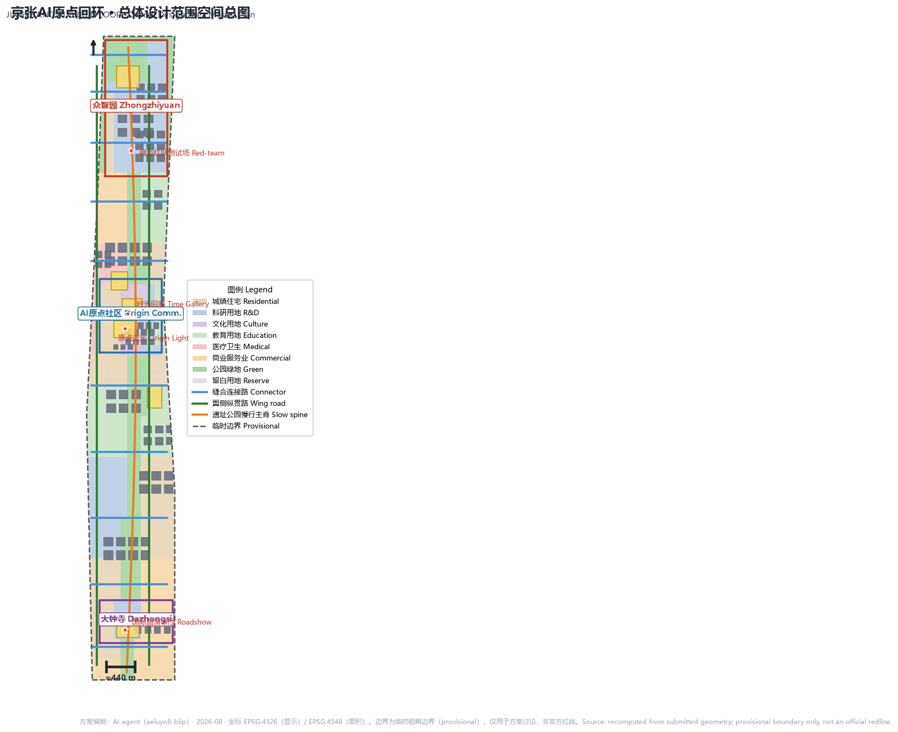
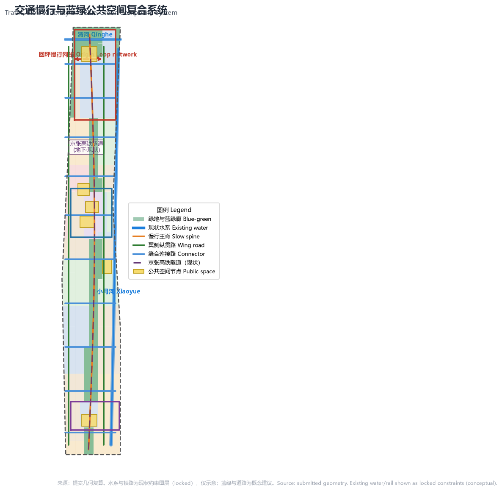

统筹研究范围
面向 43.6 km² 提出"策源—验证—转化—场景—服务—回流"闭环产业逻辑与三区两翼协同。
- 全球 AI 创新生态案例 6 个
- 命名体系与 Logo 方向
- 未来城市形态与 AI 文化叙事
一条从原点出发、又回到原点的创新闭环。以一带（遗址公园活力带）一环（原点回环慢行绿环）三核（众智园·原点社区·大钟寺）两翼（中关村科技服务翼·小月河场景赋能翼）组织 11.4 km² 总体设计与三处重点区详细设计，让创新经验证—转化—场景—服务后回流原点、沉淀为公共知识。权威数据以 GeoJSON、metrics.json、矩阵与自检结果为准，本页为离线人类可读展示。
用地分区、交通慢行、蓝绿公共空间、建筑与 AI 场景节点在同一张证据图中表达，来源为提交几何复算（EPSG:4326 显示 / EPSG:4548 面积）。

统筹研究范围（43.6 km²）回答 AI 创新生态与未来城市形态；总体设计范围（11.4 km²）落实用地、交通、蓝绿与更新；重点区域范围（368.4 ha）开展三处片区详细设计。
面向 43.6 km² 提出"策源—验证—转化—场景—服务—回流"闭环产业逻辑与三区两翼协同。
面向 11.4 km² 组织"一带一环、三核两翼"空间结构，达到控规深度城市设计。
面向三处重点片区开展详细设计，说明功能业态、建筑更新、公共空间与交通组织。
三处重点区对应 key_areas.geojson（provisional），功能业态、公共空间、交通组织与 AI 场景为概念建议。
花园型全栈自主创新与标准治理街区。依托清河界面形成滨水低碳客厅，内部以研发楼群与标准测试中心构成"测试—标准—展示"验证回路。
近校型成果转化与人才社区。以原点广场为社区客厅，组织校区、园区、街区慢行缝合，补足成果发布、开源协作与人才服务。
城市型智能经济与国际交往街区。围绕站前广场组织轨道一体化与四象限步行连通，智能商务与内容消费构成转化回路。
用地分区覆盖提交边界无缝隙无重叠；回环慢行网络连接三核两翼；绿地率约 19.4%、公共空间率约 4.5%。

场景映射到空间节点/图层，遵守数据最小化、公开来源、可解释与人工复核原则；02/03/11 为产业测试验证场景。
原点社区广场：公共模型贡献墙、成果发布，把贡献沉淀为可回流公共知识。
众智园测试中心：标准制定、安全评测、红队测试的可参观验证节点（产业测试）。
总体设计范围节点：与公共服务、低碳能源结合的新型基础设施原型（产业测试）。
遗址公园慢行主脊：可解释导视与低侵入传感识别慢行断点与无障碍需求。
大钟寺站前广场：智能体、智能终端与内容消费企业的展示与国际交流。
众智园滨水：绿色空间、雨洪、步行骑行与 AI 展示结合的公共客厅。
原点社区孵化器：高校成果转化的孵化、法务、知识产权与投融资服务。
大钟寺片区：以合规、授权、可审计为前提的数据要素城市服务界面。
医疗用地周边：AI+医疗健康、居家照护、慢病管理的可运营小尺度街区。
原点社区教育用地：面向高校与公众的 AI 通识教育、体验与测评。
回环慢行环：自动驾驶接驳、无人配送的低速测试与公共体验（产业测试）。
一带公共空间系统：从遗址文化、开源社区、产业展示到国际路演的可步行体验路线。
compliance_matrix.json 覆盖公告 1.3/1.4/1.5 与 agent.1–agent.6；standard_matrix.json 与 design_depth_matrix.json（15 项全部 complete）证明专业标准与成果深度。
官方公告、面向智能体任务书、公开政策与场地包；完整来源与许可见 sources.json。本页不加载 CDN、远程地图瓦片、外部脚本、外部字体、API 或 iframe，可离线打开。
官方边界 polygon、重点区精确范围、控规条件、现状建筑与权属、市政与文保条件均为正式深化前置条件，详见 assumptions.json 与自检结果。